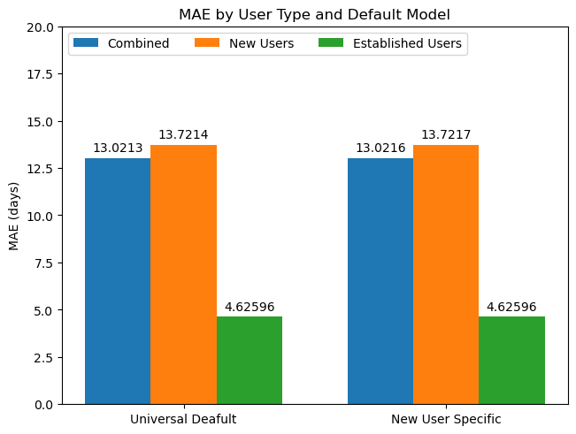

5. Final Models per person
Contents
5. Final Models per person#
import numpy as np
import pandas as pd
import matplotlib.pyplot as plt
from sklearn.model_selection import train_test_split
from sklearn import linear_model
from sklearn.metrics import mean_squared_error, mean_absolute_error
from sklearn.preprocessing import StandardScaler, RobustScaler
import pickle
import os
import glob
import seaborn as sns
data = pd.read_csv('data/df_cleaned.csv', index_col=0)
data.head()
#data = data[data.notna().all(axis=1)]
| holdtime | puzzlepack | pack_name | piece_count_1 | piece_count_2 | difficulty_rating_1 | difficulty_rating_2 | brand_1 | brand_2 | num_puzzles | |
|---|---|---|---|---|---|---|---|---|---|---|
| memberID | ||||||||||
| member1 | 2.939411 | Artifact Puzzles Justin Hillgrove Word Travels... | Artifact Puzzles Justin Hillgrove Word Travels... | 456 | 548 | 1 | 2 | Artifact | Artifact | 2 |
| member1 | 0.998885 | DaVici Puzzles Full Moon Feast DaVici Puzzles ... | DaVici Puzzles Full Moon Feast DaVici Puzzles ... | 195 | 220 | 1 | 3 | DaVici | DaVici | 2 |
| member1 | 10.865032 | DaVici Puzzles Flying Frigate DaVici Puzzles H... | DaVici Puzzles Flying Frigate DaVici Puzzles H... | 332 | 164 | 1 | 1 | DaVici | DaVici | 2 |
| member1 | 22.083971 | Liberty Puzzles Haeckel Hummingbirds Nautilus ... | Liberty Puzzles Haeckel Hummingbirds Nautilus ... | 485 | 222 | 2 | 2 | Liberty | Nautilus | 2 |
| member1 | 5.077603 | DaVici Puzzles Diana Zimens City Of Cats | DaVici Puzzles Diana Zimens City Of Cats | 700 | 0 | 2 | 2 | DaVici | DaVici | 1 |
5.1 Linear Regression per Member#
def member_train_test_split(df, test_size = 0.25):
"""
Creates train and test sets per member based on test_size
assumes rows are in time order so does not shuffle
"""
train_size = (1 - test_size)
g = df.groupby('memberID')
train_flags = (g.cumcount() + 1) <= g.transform('size') * train_size
test_flags = (g.cumcount() + 1) > g.transform('size') * train_size
# Split X and y (hold_time)
X_train = df[train_flags].drop('holdtime', axis=1)
X_test = df[test_flags].drop('holdtime', axis=1)
y_train = df[train_flags].holdtime
y_test = df[test_flags].holdtime
return X_train, X_test, y_train, y_test
# Split train/test
X_train, X_test, y_train, y_test = member_train_test_split(data)
print(X_train.shape, y_train.shape, X_test.shape, y_test.shape)
C:\Users\Hannah Luebbering\.conda\envs\cse160\lib\site-packages\ipykernel_launcher.py:8: FutureWarning: Dropping invalid columns in DataFrameGroupBy.transform is deprecated. In a future version, a TypeError will be raised. Before calling .transform, select only columns which should be valid for the transforming function.
---------------------------------------------------------------------------
TypeError Traceback (most recent call last)
~\.conda\envs\cse160\lib\site-packages\pandas\core\groupby\generic.py in _transform_general(self, func, *args, **kwargs)
1316 try:
-> 1317 path, res = self._choose_path(fast_path, slow_path, group)
1318 except TypeError:
~\.conda\envs\cse160\lib\site-packages\pandas\core\groupby\generic.py in _choose_path(self, fast_path, slow_path, group)
1393 path = slow_path
-> 1394 res = slow_path(group)
1395
~\.conda\envs\cse160\lib\site-packages\pandas\core\groupby\generic.py in <lambda>(group)
1382 slow_path = lambda group: group.apply(
-> 1383 lambda x: getattr(x, func)(*args, **kwargs), axis=self.axis
1384 )
~\.conda\envs\cse160\lib\site-packages\pandas\core\frame.py in apply(self, func, axis, raw, result_type, args, **kwargs)
8739 )
-> 8740 return op.apply()
8741
~\.conda\envs\cse160\lib\site-packages\pandas\core\apply.py in apply(self)
687
--> 688 return self.apply_standard()
689
~\.conda\envs\cse160\lib\site-packages\pandas\core\apply.py in apply_standard(self)
811 def apply_standard(self):
--> 812 results, res_index = self.apply_series_generator()
813
~\.conda\envs\cse160\lib\site-packages\pandas\core\apply.py in apply_series_generator(self)
827 # ignore SettingWithCopy here in case the user mutates
--> 828 results[i] = self.f(v)
829 if isinstance(results[i], ABCSeries):
~\.conda\envs\cse160\lib\site-packages\pandas\core\groupby\generic.py in <lambda>(x)
1382 slow_path = lambda group: group.apply(
-> 1383 lambda x: getattr(x, func)(*args, **kwargs), axis=self.axis
1384 )
TypeError: 'int' object is not callable
During handling of the above exception, another exception occurred:
TypeError Traceback (most recent call last)
C:\conda_tmp\ipykernel_23096\731815928.py in <module>
1 # Split train/test
----> 2 X_train, X_test, y_train, y_test = member_train_test_split(data)
3 print(X_train.shape, y_train.shape, X_test.shape, y_test.shape)
C:\conda_tmp\ipykernel_23096\48851854.py in member_train_test_split(df, test_size)
6 train_size = (1 - test_size)
7 g = df.groupby('memberID')
----> 8 train_flags = (g.cumcount() + 1) <= g.transform('size') * train_size
9 test_flags = (g.cumcount() + 1) > g.transform('size') * train_size
10
~\.conda\envs\cse160\lib\site-packages\pandas\core\groupby\generic.py in transform(self, func, engine, engine_kwargs, *args, **kwargs)
1356 def transform(self, func, *args, engine=None, engine_kwargs=None, **kwargs):
1357 return self._transform(
-> 1358 func, *args, engine=engine, engine_kwargs=engine_kwargs, **kwargs
1359 )
1360
~\.conda\envs\cse160\lib\site-packages\pandas\core\groupby\groupby.py in _transform(self, func, engine, engine_kwargs, *args, **kwargs)
1468
1469 # only reached for DataFrameGroupBy
-> 1470 return self._transform_general(func, *args, **kwargs)
1471
1472 # -----------------------------------------------------------------
~\.conda\envs\cse160\lib\site-packages\pandas\core\groupby\generic.py in _transform_general(self, func, *args, **kwargs)
1317 path, res = self._choose_path(fast_path, slow_path, group)
1318 except TypeError:
-> 1319 return self._transform_item_by_item(obj, fast_path)
1320 except ValueError as err:
1321 msg = "transform must return a scalar value for each group"
~\.conda\envs\cse160\lib\site-packages\pandas\core\groupby\generic.py in _transform_item_by_item(self, obj, wrapper)
1446
1447 if not output:
-> 1448 raise TypeError("Transform function invalid for data types")
1449
1450 columns = obj.columns.take(inds)
TypeError: Transform function invalid for data types
"""
Replaced with order based split to account for time
# Split train/test
X_train, X_test, y_train, y_test = train_test_split(data.drop('hold_time', axis=1), data['hold_time'], random_state = 123)
print(X_train.shape, y_train.shape, X_test.shape, y_test.shape)
"""
"\nReplaced with order based split to account for time\n# Split train/test\nX_train, X_test, y_train, y_test = train_test_split(data.drop('hold_time', axis=1), data['hold_time'], random_state = 123)\nprint(X_train.shape, y_train.shape, X_test.shape, y_test.shape)\n"
# Dropping difficulty as difficulty should be encoded by splitting piece counts up by difficulty
X_train = X_train.drop(['diff_0', 'diff_1'], axis=1)
X_test = X_test.drop(['diff_0', 'diff_1'], axis=1)
print(len(X_train))
print(len(X_train[X_train.isna().any(axis=1)]))
print(len(X_train[X_train.notna().all(axis=1)]))
13132
1094
12038
print(len(X_test))
print(len(X_test[X_test.isna().any(axis=1)]))
print(len(X_test[X_test.notna().all(axis=1)]))
4703
298
4405
# Handle puzzles with no info, this is quite common
# Drop them from training as to not introduce non-existant signal
y_train = y_train[X_train.notna().all(axis=1)]
X_train = X_train[X_train.notna().all(axis=1)]
# Can't drop from test as we still need to predict something for these people
# Try filling with median?
X_test_not_missing = X_test.notna().all(axis=1)
X_test['pieces_d1'] = X_test.pieces_d1.fillna(X_train.pieces_d1.mean())
X_test['pieces_d2'] = X_test.pieces_d2.fillna(X_train.pieces_d2.mean())
X_test['pieces_d3'] = X_test.pieces_d3.fillna(X_train.pieces_d3.mean())
X_test['pieces_d4'] = X_test.pieces_d4.fillna(X_train.pieces_d4.mean())
X_test.num_puzzles = X_test.num_puzzles.fillna(2) # just doing this manually as basically every pack has 2 puzzles
# Calculate global distribution info for each puzzle
full_training_set = X_train.copy()
full_training_set['hold_time'] = y_train.copy()
hold_summary_by_pack = full_training_set.groupby(by=['pack_name'])['hold_time'].describe()
# Some packs only have 1 data point so std dev is NaN, fill with avg std dev from the entire set
hold_summary_by_pack['std'] = hold_summary_by_pack['std'].fillna(hold_summary_by_pack['std'].mean())
# There are likely going to be instances in the test set where we don't have data for a pack, use the global averages for now
# TODO come up with a more sophisticated way to handle packs we don't have data for
X_test[X_test.isna().any(axis=1)]
| member | pack_name | pieces_d1 | pieces_d2 | pieces_d3 | pieces_d4 | num_puzzles |
|---|
# Join the training data with the per pack info, just going to use mean and std for now
# TODO try out other variations on pack hold-time distribution information
X_train = pd.merge(X_train, hold_summary_by_pack[['count','std', 'mean']], left_on='pack_name', right_index=True, how='left')
X_train['pack_hold_time_std'] = X_train['std']
X_train['pack_hold_time_mean'] = X_train['mean']
X_train['pack_hold_time_count'] = X_train['count']
X_train = X_train.drop(['std', 'mean', 'count'], axis=1)
X_train[X_train.isna().any(axis=1)]
| member | pack_name | pieces_d1 | pieces_d2 | pieces_d3 | pieces_d4 | num_puzzles | pack_hold_time_std | pack_hold_time_mean | pack_hold_time_count |
|---|
# Add pack hold_time avg and std dev from training set to test set data
X_test = pd.merge(X_test, hold_summary_by_pack[['count', 'std', 'mean']], left_on='pack_name', right_index=True, how='left')
X_test['pack_hold_time_std'] = X_test['std']
X_test['pack_hold_time_mean'] = X_test['mean']
X_test['pack_hold_time_count'] = X_test['count']
X_test = X_test.drop(['mean', 'std', 'count'], axis=1)
# For packs from the test set with pack hold time data, fill with the means from the hold_time summary created using only training data
X_test['pack_hold_time_mean'] = X_test['pack_hold_time_mean'].fillna(hold_summary_by_pack['mean'].mean())
X_test['pack_hold_time_std'] = X_test['pack_hold_time_std'].fillna(hold_summary_by_pack['std'].mean())
X_test['pack_hold_time_count'] = X_test['pack_hold_time_count'].fillna(hold_summary_by_pack['count'].mean())
# Similar hold time distribution info per member, if hold-time data not present use global avg
hold_summary_by_member = full_training_set.groupby(by='member')['hold_time'].describe()
X_train = pd.merge(X_train, hold_summary_by_member[['count', 'mean', 'std']].rename(columns={'count': 'member_hold_time_count', 'mean': 'member_hold_time_mean', 'std': 'member_hold_time_std'}), left_on='member', right_index=True, how='left')
X_test = pd.merge(X_test, hold_summary_by_member[['count', 'mean', 'std']].rename(columns={'count': 'member_hold_time_count', 'mean': 'member_hold_time_mean', 'std': 'member_hold_time_std'}), left_on='member', right_index=True, how='left')
# For missing hold time summary data impute with global avg of the training set
#Filling train
X_train['member_hold_time_mean'] = X_train['member_hold_time_mean'].fillna(hold_summary_by_member['mean'].mean())
X_train['member_hold_time_std'] = X_train['member_hold_time_std'].fillna(hold_summary_by_member['std'].mean())
X_train['member_hold_time_count'] = X_train['member_hold_time_count'].fillna(hold_summary_by_member['count'].mean())
# Filling test
X_test['member_hold_time_mean'] = X_test['member_hold_time_mean'].fillna(hold_summary_by_member['mean'].mean())
X_test['member_hold_time_std'] = X_test['member_hold_time_std'].fillna(hold_summary_by_member['std'].mean())
X_test['member_hold_time_count'] = X_test['member_hold_time_count'].fillna(hold_summary_by_member['count'].mean())
hold_summary_by_member.hist('mean', bins=100)
hold_summary_by_pack.hist('mean', bins=100)
array([[<AxesSubplot: title={'center': 'mean'}>]], dtype=object)
# plotting correlation heatmap
X_train_numeric = pd.merge(X_train, full_training_set.groupby(by='member')['hold_time'].skew(), left_on='member', right_index=True, how='left')
X_train_numeric = X_train_numeric.drop(['member'], axis=1)
X_train_numeric = X_train_numeric.rename({'hold_time': 'member_skew'}, axis=1)
X_train_numeric['skew_std'] = X_train_numeric['member_skew'] * X_train_numeric.member_hold_time_std
X_train_numeric['skew_std'] = X_train_numeric['member_skew'] * X_train_numeric.member_hold_time_std
X_train_numeric['pack_v_member'] = X_train_numeric.pack_hold_time_mean - X_train_numeric.member_hold_time_mean
X_train_numeric['member_dev'] = (y_train - X_train_numeric['member_hold_time_mean'])
X_train_numeric['puzzle_dev'] = (y_train - X_train_numeric['pack_hold_time_mean'])
X_train_numeric['hold_time'] = y_train
plt.figure(figsize=(15,15))
dataplot = sns.heatmap(X_train_numeric.corr(), cmap="YlGnBu", annot=True)
# displaying heatmap
plt.show()
/var/folders/vs/2pyq73711mgf5lg0y3w7rllm0000gn/T/ipykernel_9105/2997534890.py:12: FutureWarning: The default value of numeric_only in DataFrame.corr is deprecated. In a future version, it will default to False. Select only valid columns or specify the value of numeric_only to silence this warning.
dataplot = sns.heatmap(X_train_numeric.corr(), cmap="YlGnBu", annot=True)
X_train_numeric.member_dev.hist(bins=100)
<AxesSubplot: >
X_train_numeric.plot(x='member_skew', y='member_dev', kind='scatter')
<AxesSubplot: xlabel='member_skew', ylabel='member_dev'>
# Dropping some things to see
#X_train = X_train.drop(['member_hold_time_mean', 'member_hold_time_std', 'member_hold_time_count', 'pack_hold_time_count'], axis=1)
#X_test = X_test.drop(['member_hold_time_mean', 'member_hold_time_std', 'member_hold_time_count', 'pack_hold_time_count'], axis=1)
X_train = X_train.drop(['pack_hold_time_mean', 'pack_hold_time_std', 'pack_hold_time_count', 'num_puzzles'], axis=1)
X_test = X_test.drop(['pack_hold_time_mean', 'pack_hold_time_std', 'pack_hold_time_count', 'num_puzzles'], axis=1)
record_counts = X_train.member.value_counts()
record_counts
member557 132
member474 106
member40 87
member414 85
member292 85
...
member13 1
member642 1
member645 1
member649 1
member520 1
Name: member, Length: 619, dtype: int64
MAX_STD = 5000
MIN_HISTORY = 75 # Minimum number of data points for a member to get their own model
# 3.6 / 13.2 @ 100
# 3.5 / 12.9 @ 75
# 5.5 / 14.2 @ 50
# 8.5 / 17.2 @ 25
# 11.6 / 22.3 @ 10
# Fit Scaler on all training data
# TODO Try out other scaler
scaler = StandardScaler()
scaler = scaler.fit(X_train.drop(['member', 'pack_name'], axis=1))
def train_linear_regression(X, y, scaler):
'''
Trains linear regression model using the given X, y, and scaler
Returns the trained model
'''
lr = linear_model.LinearRegression()
# Scale X
X_s = scaler.transform(X)
#X_s = X.to_numpy()
# Fit linear regression model
lr.fit(X_s, y)
return lr
# For each member with more than MIN_HISTORY data points, train a linear regression model for them and save
# Filter to members with more than MIN_HISTORY points
members = record_counts[(record_counts >= MIN_HISTORY)]
for member, c in members.items():
# Require a max std in hold, only learn for people who seem stable
member_std = hold_summary_by_member.loc[member]
if member_std['std'] > MAX_STD:
continue
X_train_m = X_train[X_train['member'] == member]
y_train_m = y_train[X_train['member'] == member]
m = train_linear_regression(X_train_m.drop(['member', 'pack_name'], axis=1), y_train_m, scaler)
# Save model for later use
with open(f'user_models/{member}.pkl', 'wb') as f:
pickle.dump(m, f)
# Create a overall model on all data points for use on users without MIN_HISTORY data points
overall_m = train_linear_regression(X_train.drop(['member', 'pack_name'], axis=1), y_train, scaler)
with open(f'user_models/universal.pkl', 'wb') as f:
pickle.dump(overall_m, f)
# Create model just on users with less than MIN_HISTORY data points as a "new puzzler" model
newps = record_counts[record_counts < MIN_HISTORY].index
X_train_newps = X_train[X_train['member'].isin(newps)]
y_train_newps = y_train[X_train['member'].isin(newps)]
newps_m = train_linear_regression(X_train_newps.drop(['member', 'pack_name'], axis=1), y_train_newps, scaler)
with open(f'user_models/newps.pkl', 'wb') as f:
pickle.dump(newps_m, f)
def make_pred(X, member, default):
'''
args:
- X - scaled input data
- member - member string
- default - default model to use
Look up the proper model and use it, if not use default model
Returns the (predicted hold time, the model used)
'''
# Check if trained model for member exists
path = f'user_models/{member}.pkl'
if os.path.exists(path):
m = pickle.load(open(path, 'rb'))
return (m.predict(X), member)
else:
# Use default model
return (default.predict(X), "default")
# Go through test set and either use the per user model or the universal model
univ_model = pickle.load(open('user_models/universal.pkl', 'rb'))
newps_model = pickle.load(open('user_models/newps.pkl', 'rb'))
print(X_train.drop(['member', 'pack_name'], axis=1).columns)
print(f"Universal Coef {univ_model.coef_}")
print(f"Newps Coef {newps_model.coef_}")
# Scale test data using scaler fit on the training data
X_test_members = X_test['member']
X_test_packs = X_test['pack_name']
X_test_scaled = scaler.transform(X_test.drop(['member', 'pack_name'], axis=1))
#X_test_scaled = X_test.drop(['member', 'pack_name'], axis=1).to_numpy()
Index(['pieces_d1', 'pieces_d2', 'pieces_d3', 'pieces_d4',
'member_hold_time_count', 'member_hold_time_mean',
'member_hold_time_std'],
dtype='object')
Universal Coef [ 1.96268797 2.39112375 2.62206506 1.53420493 0.1002531 10.32316364
0.17189966]
Newps Coef [ 2.03889872 2.4608197 2.69484494 1.56316826 0.13466524 10.33005481
0.1730354 ]
y_pred_universal, y_pred_universal_models = zip(*[make_pred(x.reshape(1, -1), m, univ_model) for x, m in zip(X_test_scaled, X_test_members)])
y_pred_universal = np.array(list(y_pred_universal))
y_pred_universal_models = np.array(list(y_pred_universal_models))
mse_univ = mean_squared_error(y_test, y_pred_universal)
mae_univ = mean_absolute_error(y_test, y_pred_universal)
print(f'Using universal default combined mse: {mse_univ}, mae: {mae_univ}')
mse_univ_usermodel = mean_squared_error(y_test[y_pred_universal_models != "default"], y_pred_universal[y_pred_universal_models != "default"])
mae_univ_usermodel = mean_absolute_error(y_test[y_pred_universal_models != "default"], y_pred_universal[y_pred_universal_models != "default"])
print(f'Using universal, user mse: {mse_univ_usermodel}, mae: {mae_univ_usermodel}')
mse_univ_default = mean_squared_error(y_test[y_pred_universal_models == "default"], y_pred_universal[y_pred_universal_models == "default"])
mae_univ_default = mean_absolute_error(y_test[y_pred_universal_models == "default"], y_pred_universal[y_pred_universal_models == "default"])
print(f'Using universal, default mse: {mse_univ_default}, mae: {mae_univ_default}')
Using universal default combined mse: 522.1756476380621, mae: 13.0212957291373
Using universal, user mse: 62.98943021215402, mae: 4.625958495474126
Using universal, default mse: 560.4676104826092, mae: 13.721390656247658
y_pred_newps, y_pred_newps_models = zip(*[make_pred(x.reshape(1, -1 ), m, newps_model) for x, m in zip(X_test_scaled, X_test_members)])
y_pred_newps = np.array(list(y_pred_newps))
y_pred_newps_models = np.array(list(y_pred_newps_models))
mse_newps = mean_squared_error(y_test, y_pred_newps)
mae_newps = mean_absolute_error(y_test, y_pred_newps)
print(f'Using newps combined mse: {mse_newps}, mae: {mae_newps}')
mse_newps_usermodel = mean_squared_error(y_test[y_pred_newps_models != "default"], y_pred_newps[y_pred_newps_models != "default"])
mae_newps_usermodel = mean_absolute_error(y_test[y_pred_newps_models != "default"], y_pred_newps[y_pred_newps_models != "default"])
print(f'Using newps, user mse: {mse_newps_usermodel}, mae: {mae_newps_usermodel}')
mse_newps_default = mean_squared_error(y_test[y_pred_newps_models == "default"], y_pred_newps[y_pred_newps_models == "default"])
mae_newps_default = mean_absolute_error(y_test[y_pred_newps_models == "default"], y_pred_newps[y_pred_newps_models == "default"])
print(f'Using newps, default mse: {mse_newps_default}, mae: {mae_newps_default}')
Using newps combined mse: 522.0700482259101, mae: 13.021581398932065
Using newps, user mse: 62.98943021215402, mae: 4.625958495474126
Using newps, default mse: 560.3532050379303, mae: 13.721700148310497
set(y_pred_universal_models[y_pred_universal_models != "default"])
{'member117',
'member279',
'member292',
'member324',
'member363',
'member40',
'member402',
'member414',
'member474',
'member557',
'member608'}
print(len(y_test))
print(len(y_test[y_pred_newps_models != "default"]))
print(len(y_test[(y_pred_newps_models != "default") & (X_test_not_missing)]))
mean_absolute_error(y_test[(y_pred_newps_models != "default") & (X_test_not_missing)], y_pred_newps[(y_pred_newps_models != "default") & (X_test_not_missing)])
4703
362
340
4.59828444364085
file = glob.glob('user_models/*')
for f in file:
os.remove(f)
pass
approaches = ("Universal Deafult", "New User Specific")
model_mae = {
"Combined": (mae_univ, mae_newps),
"New Users": (mae_univ_default, mae_newps_default),
"Established Users": (mae_univ_usermodel, mae_newps_usermodel)
}
x = np.arange(len(approaches)) # the label locations
width = 0.25 # the width of the bars
multiplier = 0
fig, ax = plt.subplots(layout='constrained')
for model, mae in model_mae.items():
offset = width * multiplier
rects = ax.bar(x + offset, mae, width, label=model)
ax.bar_label(rects, padding=3)
multiplier += 1
# Add some text for labels, title and custom x-axis tick labels, etc.
ax.set_ylabel('MAE (days)')
ax.set_title('MAE by User Type and Default Model')
ax.set_xticks(x + width, approaches)
ax.legend(loc='upper left', ncols=3)
ax.set_ylim(0, 20)
plt.show()
